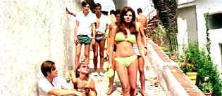

| Fathom/ C+,C |
| Fox/1967/99/ANA 2.35 |
A frivolous action flick whipped up chiefly as
an excuse to show off curvaceous Raquel Welsh in a variety of revealing
outfits while she tries to untangle herself from a web of international
jewel intrigue.
On a sky diving vacation in Spain, Fathom Harvill gets
recruited to spy by some dubious quasi military types. Following orders,
Fathom floats down into the lap of Peter Merriweather, a Hong Kong swifty
on the scent of whatever everyone seems to be after. If Peter isn't enough
of a challenge, there's the devious Russian Sergi Serapkin. Fathom
gets to exercise her parachute wings, her water wings, and even dances
with an angry bull. The one-liners are uninspired, but the setting is
charming and the characters just far enough from blatant satire to keep Fathom
on a even light keel.
 |
|
Welsh turns some heads in brief lime. ©Fox |
Raquel Welsh does looks scrumptious draped
across the widescreen. She handles her role with enough carefree abandon
and self-aware sexuality to bring some entertainment to Fathom.
Anthony Franciosa grins a lot and seems to be having a fine time cast in
an unusual action role.
Leslie H. Martinson directs competently
from a script by Lorenzo Semple, Jr. The cinematography is uninspired and
the music adds little to the pleasures.
Transfer elements are not in terrific shape. Some
color wear is evident and minor misregistration shows up here and there.
Not that all those outfits Raquel Welsh wears don't come to life. Hers is
the best shape in Fathom. Overall, this isn't a very sharp transfer. Even
slightly mushy. Black level is all right. there's little strain on shadow
detail since most of the scenes are brightly lit. The mono sound is rather
harsh and slightly distorted. Not very pleasant.


ISF Monitor
Calibrations in the Tristate New York area. Lots of hardware
info and frequent hardware peaks from video expert Kevin Miller. They may
be judgmental, but that's the point, isn't it. Lots of DVD reviews plus
news and more.

DVD Demystified makes it all clear. The official Internet DVD
FAQ for the rec.video.dvd Usenet newsgroups.

Terrific resource for learning about the ins and outs of movie
poster collecting.
 ETEKNet
is the web's only 24-hour, totally FREE source for all your home theater,
DVD, Dreamcast, PC, and Networking tech support needs!
ETEKNet
is the web's only 24-hour, totally FREE source for all your home theater,
DVD, Dreamcast, PC, and Networking tech support needs!

The National Film Preservation Foundation (NFPF) is the
nonprofit organization created by the U.S. Congress to save America's film
heritage.